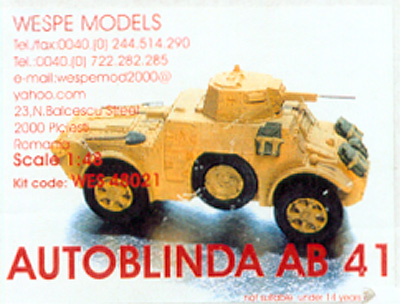
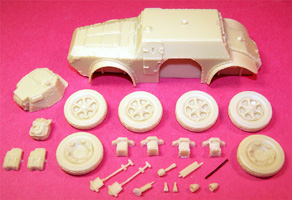
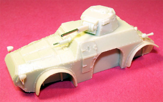
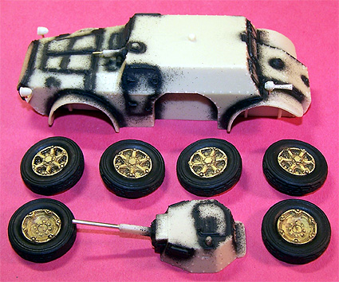
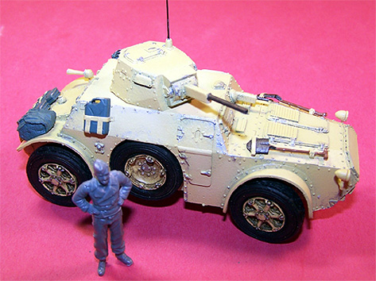
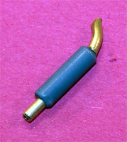
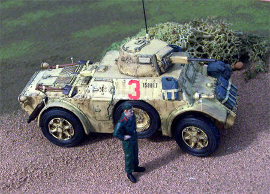
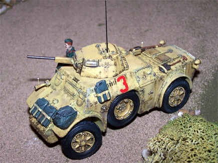
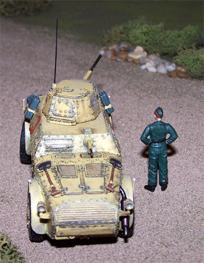
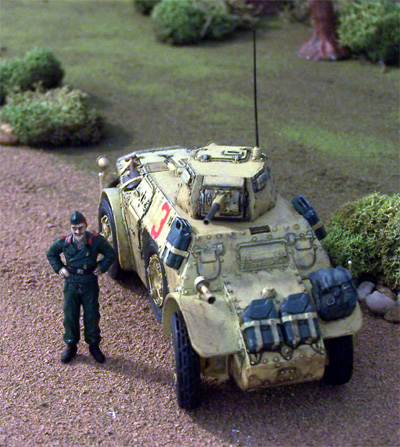

{kind=link}
{kind=link}


Wespe Models 1/48 Resin Autoblinda AB 41
Kit #48021
MSRP $60.65
Images and text Copyright � 2006 by Matt Swan

Developmental Background
The Autoblinda was Italy�s version of the armored car and there were several series produced from 1939 until the end of hostilities in 1945. The original concept appeared in 1939 as the AB-40 and in 1942 the upgraded AB-41 was being seen with operational units. The vehicle was generally a good performing unit that could be driven from either front or rear driving stations. It featured a 20mm cannon on a rotating turret and an 8mm machine gun in the aft position. Approximately 1 in 4 units included an anti aircraft machine gun mounted in the turret. Considering the time period this armored car was developed it could be considered an advanced type of system and while it�s overall performance was good, being able to top out at 49 mph, it did have recurring issues with the steering system for the entire production lifespan. Several conversion kits were provided by the manufacture such as special sand tires and railroad track wheels or turret mounted search lights.
The Autoblinda AB-41 was used by Italian reconnaissance units in the Western Desert and Tunisia. It was also used in the Balkans for anti-partisan patrols; these were mostly rail mounted units. Colonial police units also used the AB-41 as a patrol vehicle. Manned by a crew of four this little vehicle cold ford a river of 28 inches in depth without a problem, achieved a top speed on good roads of 49 mph and 24 mph off road. Power was supplied via a gasoline fed in-line water cooled six cylinder engine producing 80 horse power.
The Kit
Wespe Models is small Romanian based manufacture of fine resin kits. They not only produce a very interesting line of 1/48 vehicle kits but also manufacture 1/72 and 1/35 scale kits. Initially the prices may seem a little high but the quality of the material makes it worthwhile.

The Autoblinda arrives in a small white cardboard box with a small piece of color artwork attached. Inside is a single sheet of instructions along with a small zip-lock bag containing the resin parts. The main hull and top turret are solid cast pieces with very good surface detail and only three small micro bubbles. All pieces are cast in a light tan, almost yellow resin that is easily trimmed with a razor knife. Most of the pieces do not have casting blocks attached other than the four wheel mounts. In my package one shovel was broken but the pieces were still in the bag and repair was accomplished quickly and easily. All told we have twenty four resin pieces and a single length of copper wire.
While most of the news here is good there are two points that that are weak for this kit. That short length of wire is intended to act as the main 20mm cannon and the 8mm machine gun barrel is a joke. After researching the vehicle type I find a few items missing such as the prominent exhaust muffler that rests on top of the right rear fender and the four side marker posts that should mount on each fender. These are not serious omissions and can be remedied. Something else that is lacking is any decals or suggestions for markings.
Construction

I�ve been working on my two SM-79 Italian Torpedo Bombers and wanted this kit for use in the final diorama. Since I am waiting for paint to dry on the SM-79 I decided to start working on this. I removed the pour stubs from the wheel mounts and sanded all the rough areas on the parts then gave them a quick wash in warm soapy water. The rear lights are supposed to be mounted on short posts which are not included in the kit, I took care of this with some short lengths of magnet wire � same for the horn in front. I cut the crappy little barrel off the 8mm machine gun, drilled out the base and installed a short length of small micro tube then attached the unit to the hull. The 20mm cannon base was also drilled out and a large piece of micro tube was superglued in there. The turret mounts on a small stud and will not be glued in place so I can position it wherever I care to after the model is built.
I was not finding a good desert sand color that I liked for this build so made my own based on the Model Master Sand and some Chrome Yellow. The wheels were all painted with this mixture, allowed to dry then the tires were done with an acrylic black. The pieces were washed with a dark brown sludge wash then dry brushed with some silver. The hull and turret were preshaded with black prior to the color being applied. The kit includes two Jerry cans and a single large pack intended to be attached to the exterior of the hull. I wanted a little more stuff hanging onto this so took two Jerry cans from my spares pile, added hold down straps made from strips of masking tape then painted all the add-on equipment field gray. The hold down straps were then done with the Sand Yellow.
Once the base color was dry on the hull and turret I attached the wheels then dry brushed silver across various rivets and around strike points at the corners. Next the exterior pack and cans were glued to the hull. I made a whip ariel from stretched sprue and painted that black. I like to add crew figures wherever possibly and have plenty of air crew guys hanging around but no Italian armor figures; actually I don�t even know what their uniform would look like. I went on-line and found a few color images of Italian armor personnel and found that they had several different uniforms. I settled on a dark green because the cut of the uniform was quite similar to the German uniforms and I did have a Tamiya set of 1/48 infantry figures and little knife work would make one of them acceptable.
 

To make the exhaust stack I took a piece of sprue from the Tamiya set, drilled out both ends then inserted short lengths of large copper tube. The entire assembly was painted with Model Master Lacquer Burnt Iron then attached to the fender of the vehicle. Side marker posts were made from stretched sprue then one end was treated with superglue accelerator then dipped in superglue. This caused a small ball to form right on the tip � looks just like the real thing. These were attached to the outer fenders. Next the mode is sealed with a coat of Future floor polish and allowed to dry overnight. Once dry it was treated with a dirty brown sludge wash. Using a damp cotton swab I cleaned off a few high spots on the hull. A few decals were added from the spares box, these are actually 1/72 Focke Wulf 190 left-overs but the size is right for this kit. I used a couple large red markings followed by some black work number decals. I did this based on images I found on-line of Autoblinda AB-41s. The next step is to seal the entire kit with some Polly Scale clear flat. The final step for this build is the application of chalk, I ground up some gray and brown chalk and rubbed it on the fenders and around the rear sections of the hull with an eye-shadow swab then sharpened one stick of brown chalk and used it to create the various rust stains running down from various spots on the hull. Once the chalk was drawn on the hull I then wiped it gently with my fingertip for the final effect.
   
Conclusions
This was a neat little kit and a nice diversion from the regular stuff I build. It went together very well and, other than the crappy gun barrels and missing detail items, displays good rivet detail and good profile. It is on the pricy side but then so are most all-resin kits. If you have not ventured into the resin market I think this would make for an excellent first kit, it allows for a good quick build and with some minimal scratch building makes for an excellent example of an Italian armored car.